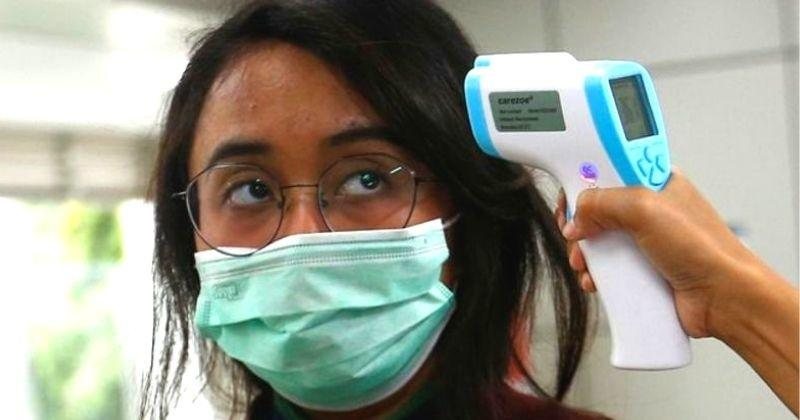
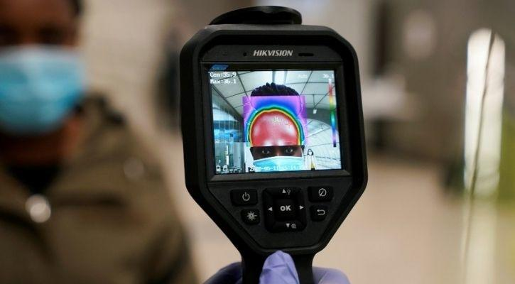

Forehead Temperature Scans Don't Detect COVID-19, Claim Experts
Today, with the COVID-19 pandemic still showing no signs of stopping, we see airports, malls, theatres and other public spaces open, with a few modifications.One of them being an IR temperature scanner at every gate checking if your body temperature isn’t too hot.However, now a group of researchers have revealed that these screenings aren’t really doing anything.
This is according to researchers from the John Hopkins School of Medicine.They revealed in an Open Forum Infectious Diseases op-ed while quoting a CDC report that revealed that out of a total 766,000 travellers screened with IR-based forehead thermometers from January to September, only one person in 85,000 individuals (amounting to 0.001 percent) later tested positive for the novel coronavirus.
They revealed that body temperature isn’t the most effective way of identifying someone who has SARS CoV-2, as most situations individuals are asymptomatic, so an IR thermometer would always keep them in the green.
However, regardless of this loophole, IR thermometer scanning isn’t as accurate, as it has two major issues.Primarily, non-contact IR thermometers are known to be severely inaccurate at times, as in most cases their accuracy is affected by various human and environmental factors as well as depending on the equipment, says co-author William Wright, an assistant professor of infectious diseases at Johns Hopkins.'The only way to reliably take the core temperature requires catheterization of the pulmonary artery, which is neither safe nor practical as a screening test,' he says.
Wright further explains that temperature on the forehead doesn’t necessarily reflect the core body temperature one’s possessing.'During the period when a fever is rising, a rise in core temperature occurs that causes blood vessels near the skin’s surface to constrict and reduce the amount of heat they release.And during a fever drop, the opposite happens.So, basing a fever detection on [non-contact infrared thermometer] measurements that measure the heat radiating from the forehead may be totally off the mark.'
Researchers recommend that if authorities still wish to continue such monitoring, some changes must be made promptly.Firstly, CDC should lower its recommended baseline temperature of 100.4 degrees Fahrenheit.Additionally, they recommend use of wearable thermometers that can be paired with smartphones for a more accurate reading.
Thirdly they also recommend better-targeted surveillance.For example, in an office, monitoring sewage sludge for SARS CoV-2 could give you a better idea of COVID-19 cases in the office than the thermometer and help you deal with outbreaks in a swifter manner.
Posted On: 2020-12-18T08:21:00
Posted By: Monit Khanna


Content Date: 2020-12-18
Download Date: 2021-04-21
Document ID: L0C04AOSM